Mode d’emploi
Toutes les fonctions d’ImberGym expliquées pas à pas. Les fonctions marquées PREMIUM font partie d’ImberGym Premium ; tout le reste est gratuit.
01Premiers pas
Au premier lancement d’ImberGym, quelques questions suffisent pour tout configurer. Tu peux tout modifier plus tard dans ton profil.
- Langue : français, allemand, anglais ou espagnol (présélectionnée selon ton téléphone).
- Unités : métrique (kg, km) ou impérial (lb, mi). L’appli enregistre toujours les valeurs exactes ; l’unité ne change que l’affichage.
- À propos de toi : prénom, genre (y compris « ne pas préciser »), âge et, en option, poids et taille. Le poids et la taille servent aux exercices au poids du corps et à ton objectif de calories.
- Objectif et entraînement : objectif (p. ex. prise de muscle, perte de gras), niveau d’activité, lieu d’entraînement (salle, maison avec haltères, sans matériel) et jours d’entraînement facultatifs. Les jours d’entraînement ne sont qu’une prévision : rien n’est jamais marqué comme « manqué ».
- Minuteur de repos : si un compte à rebours démarre après chaque série.
- Compter les calories ? Sans nutrition, l’onglet « Nutrition » disparaît et ImberGym devient un pur carnet d’entraînement.
- Programme de départ et agenda : l’appli peut créer un programme débutant adapté et enregistrer les séances dans ton agenda (voir Agenda).
Nouveau téléphone ? Touche « Restaurer une sauvegarde » sur la première page et choisis le fichier ZIP de ta sauvegarde (voir Sauvegarde).
02Organisation de l’appli
- Accueil : ton quotidien : semaine, recommandation, programmes, lancer une séance.
- Programmes : tes programmes, les modèles et la bibliothèque d’exercices.
- Historique : statistiques, toutes les séances et les records.
- Nutrition : calories, macros, aliments et recettes (désactivable).
- Profil : réglages, mesures corporelles, compléments, salles, sauvegarde et plus.
Les messages en bas de l’écran disparaissent après quelques secondes ou d’un simple toucher, même ceux avec « Annuler ».
03Accueil
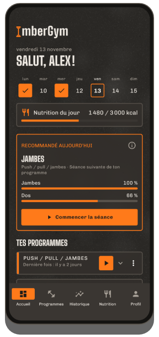
Semaine
La barre du lundi au dimanche montre les séances faites en orange avec une coche, les prochains jours prévus en pointillés et aujourd’hui encadré.
Recommandé aujourd’hui
Si ton programme le plus récent comporte plusieurs séances, la carte propose la bonne, selon l’ordre du programme et la récupération de tes muscles (voir Recommandation). « Commencer la séance » te lance aussitôt.
Tes programmes
- Tous les programmes sont repliés, le plus récemment entraîné en premier. Touche-le pour le déplier et voir chaque séance avec sa dernière fois (durée, séries, volume ou distance).
- ▶ lance la séance suivante. Si un programme en a plusieurs, l’appli demande laquelle : la prochaine prévue est en haut.
- Toucher une carte ouvre la dernière séance correspondante avec toutes les séries.
- Le menu ⋮ propose « Retirer de l’accueil » (avec annulation). Le programme reste dans l’onglet Programmes et revient dès que tu t’entraînes à nouveau avec.
- Les séances libres des quatre dernières semaines apparaissent aussi ici (avec le nom de leurs exercices, p. ex. « Randonnée ») et se relancent avec ▶.
Démarrage rapide
- Autre séance : lance n’importe quelle séance d’un programme.
- Séance libre : sans programme, ajoute des exercices au fur et à mesure.
- Fractionné : Tabata et plus. PREMIUM
- Défi : combien de répétitions arrives-tu à faire ? La caméra compte.
- Plein air avec GPS : enregistre courses, sorties à vélo et randonnées. PREMIUM
Selon tes réglages, l’accueil affiche aussi « Nutrition du jour », « Compléments du jour », un enregistrement GPS ouvert (« reprendre ») et, en haut à droite, une icône de carte pour tes cartes de membre.
04Programmes et modèles
Modèles
L’onglet Programmes contient des programmes prêts à l’emploi : débutant (salle, maison avec et sans haltères), full body A/B, haut/bas du corps, push/pull/jambes, splits par groupes musculaires, abdos-fessiers-cuisses, callisthénie, kettlebell, élastiques, yoga et plus. Lance un modèle directement ou copie-le comme programme perso. À la copie, l’appli demande si le minuteur de repos doit être utilisé.
Créer et modifier un programme
- Onglet Programmes → « Nouveau programme », donne-lui un nom.
- Ajoute des séances (p. ex. Push, Pull, Jambes). Les séances forment un ordre, pas des jours fixes.
- Ajoute des exercices à chaque séance et règle séries, répétitions (aussi une fourchette comme 8–12), repos entre les séries et repos avant l’exercice suivant. « Par côté » marque les exercices unilatéraux.
- Superset : relie deux exercices qui se suivent : pendant la séance, ils alternent et le repos vient après le tour.
- Ajoute un bloc de fractionné (Tabata, etc.) sous la liste : voir Entraînement fractionné.
Chaque modification est enregistrée immédiatement. Une estimation de durée en haut indique combien de temps dure environ la séance. Dans l’éditeur, tu actives aussi le minuteur de repos de ce programme et choisis s’il apparaît sur l’accueil.
Partager un programme par QR code
Dans l’éditeur du programme, touche l’icône QR : tout le programme est dans le code, sans serveur. « Partager en image » l’envoie p. ex. par messagerie. Le partage est gratuit.
Scanner un programme PREMIUM : onglet Programmes → « Scanner un programme », capture le code avec la caméra ou charge-le depuis une image, vérifie l’aperçu et importe-le.
Gratuit : jusqu’à 5 programmes perso (les modèles copiés comptent) ; illimités avec Premium.
05Exercices
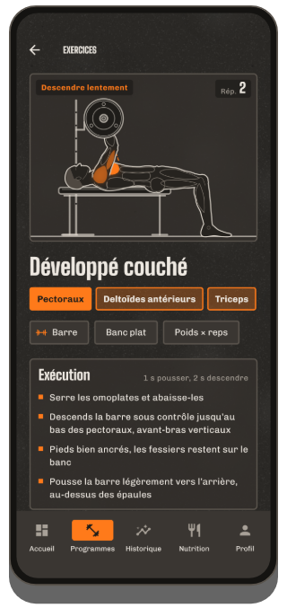
Bibliothèque d’exercices
Plus de 250 exercices, des machines au yoga. Cherche par nom ou par muscle et filtre par muscle et matériel.
Détail de l’exercice
- Animation du mouvement avec les muscles sollicités en orange (principaux en plein, secondaires plus clairs), la phase (« Pousser », « Descendre lentement ») et un compteur de répétitions.
- Muscles et matériel, « Exécution » avec tempo et conseils de technique.
- Ta progression : un graphique de tes valeurs au fil des séances.
- En callisthénie, les niveaux de progression (plus facile/plus difficile).
La figure existe en version masculine et féminine : choisis-la dans ton profil, sous « Silhouette ».
Créer un exercice perso
- Bibliothèque → crée ton propre exercice.
- Choisis nom, matériel et type de suivi : charge × reps, poids du corps × reps, reps avec force de l’élastique, durée, cardio ou enregistrement GPS (pour tes propres sports de plein air ; avec en plus « Afficher l’allure » et « Pause automatique »).
- Touche les muscles sur la carte du corps : 1× = principal, 2× = secondaire, 3× = retirer.
Les exercices perso avec historique sont archivés à la suppression : ton historique est conservé. Gratuit jusqu’à 5 exercices perso, illimités avec Premium.
06Séance
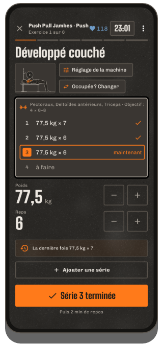
Démarrer
Depuis l’accueil (▶, « Recommandé aujourd’hui », « Autre séance », « Séance libre ») ou l’onglet Programmes. Une séance en cours survit même à un redémarrage du téléphone : en ouvrant l’appli, tu y reviens directement.
L’écran de séance
- Un exercice par page : glisse pour changer d’exercice ; la dernière page est le résumé. En haut : exercice x sur y, durée de la séance et (avec une ceinture cardio) ta fréquence cardiaque.
- Liste des séries : faites, « maintenant » (orange) et à venir. Touche une série pour la sélectionner.
- Valeurs : change charge et répétitions avec −/+ ou touche le grand chiffre pour le saisir (virgule et point acceptés). Les valeurs de la dernière fois sont déjà remplies.
- « Série n terminée » valide la série, lance le repos et passe automatiquement à l’exercice suivant (en superset, à l’exercice associé).
- Ajouter une série pour une série en plus. Les séries non faites restent vides et sont supprimées à la fin.
Aides sur la carte de série
- Touche la miniature de l’exercice : animation et exécution sans quitter la séance.
- Réglage de la machine (machines, poulies, barre) : mémorise p. ex. le numéro de la machine dans ta salle et la hauteur du siège (« D7 · siège 4 ») ; il sera là la prochaine fois et s’affiche en étiquette orange à côté du nom de l’exercice (séance, programme, liste d’exercices).
- Pas de charge (p. ex. haltères) : l’écart de −/+ par matériel (par défaut 2,5 kg / 5 lb).
- Occupée ? Changer ou Changer d’exercice : choisis une alternative adaptée (uniquement avant d’avoir fait une série de l’exercice).
- Suggestion de progression : si tu fais toutes les répétitions, l’appli propose plus de charge (ou moins d’assistance, un élastique plus fort, le niveau suivant). Elle ne s’applique qu’avec « Appliquer ».
- Nouveau record ! s’affiche juste après la validation d’une série quand tu bats une ancienne marque.
Menu ⋮
Ajouter un exercice, choisir la salle PREMIUM, afficher la carte PREMIUM, minuteur de repos oui/non, retirer l’exercice, supprimer la séance.
Cardio et gainage
Les exercices de cardio n’ont pas de séries : durée et distance (étages sur le stepper), niveau sur les machines, puis « Terminé ». Les exercices de gainage (p. ex. planche) enregistrent des secondes.
Poids du corps et assistance
Pour les exercices au poids du corps, tu saisis la charge ajoutée ; pour les exercices assistés (p. ex. tractions assistées), l’assistance : l’appli calcule avec ton poids du profil. S’il manque, elle le demande une seule fois à la première série.
Terminer
« Terminer » sur la page de résumé, ou ✕ / le bouton retour : l’appli demande « Terminer / Supprimer / Continuer ». Sans série faite, rien n’est enregistré.
07Repos et écran verrouillé
- Après chaque série, le compte à rebours du repos défile en bas avec « Ensuite », −15 s, +15 s et « Passer ». Sa durée vient du programme (repos entre les séries ou avant l’exercice suivant).
- Le minuteur continue si tu verrouilles le téléphone ou changes d’appli ; une notification affiche le compte à rebours et le signal de repos retentit à la fin.
- Choisis le signal de repos dans ton profil : bips, gong, cloche, sifflet, cloche de boxe, doux, son du système ou aucun, avec écoute. La vibration a son propre interrupteur.
- Désactiver le minuteur : par programme dans l’éditeur, pour les séances libres dans le profil et pendant une séance via ⋮.
- Repos selon le pouls : avec une ceinture cardio, le repos se termine dès que ta fréquence cardiaque descend à ton seuil (au plus tôt après 30 s, au plus tard avec le minuteur).
Écran verrouillé
Pendant une séance, ImberGym s’affiche par-dessus l’écran verrouillé : logo et grande horloge (repos ou durée de séance). Après 2 minutes, l’écran s’assombrit ; un toucher le rallume, « Touche pour déverrouiller » te ramène à la séance. L’écran reste allumé pendant la séance.
08Entraînement fractionné PREMIUM
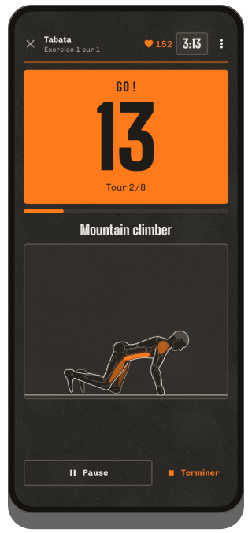
Démarrage rapide
- Accueil → tuile « Fractionné ».
- Choisis un modèle : Tabata 20/10 × 8, HIIT 40/20 × 8, 30/30 × 10 ou EMOM 60 s × 10 ; tout est réglable : effort, repos, tours, blocs et repos entre les blocs.
- Ajoute des exercices : ils alternent à chaque tour.
- « Lancer le fractionné ».
Fonctionnement
Après 10 s de préparation, un grand compte à rebours affiche l’effort (orange) et le repos (gris, avec « Ensuite » et la figure). Avant l’effort, une voix compte en anglais « One, two, three – go! » et avant la fin « Three, two, one – stop! » (désactivable dans le signal de repos du profil ; des bips retentissent alors). Fonctionne aussi téléphone verrouillé. Mets en pause et termine quand tu veux ; les intervalles faits sont enregistrés. À la fin, tu peux saisir tes répétitions par tour.
Dans un programme
Ajoute un « Bloc de fractionné (Tabata et plus) » dans l’éditeur du programme : le bloc devient une page à part de la séance.
Compter avec la caméra EXPÉRIMENTAL
Pour les exercices sans matériel (squat, squat sauté, split squat, fente arrière, burpee, variantes de pompes) et les crunchs, sit-ups, crunchs inversés, V-ups, relevés de jambes et relevés de genoux allongé, la caméra peut compter tes répétitions. En planche haute, planche et planche latérale, elle mesure combien de temps tu tiens la bonne position : le chrono de l’intervalle continue, le temps tenu seulement tant qu’épaules, hanches et chevilles sont alignées ; sinon, tu verras « Hanches plus haut ! » ou « Hanches plus bas ! ».
- Sur la page du bloc, touche « Compter avec la caméra (expérimental) » et autorise la caméra.
- Pose le téléphone de côté à 2–3 m, p. ex. contre un mur ou une bouteille. Pour les pompes, les abdos ou un mélange d’exercices debout et au sol : pose le téléphone au sol, en portrait ou en paysage, l’appli s’adapte. En paysage, la préparation, le compteur et le résumé pivotent aussi : secondes et répétitions en grand à gauche, l’animation à droite.
- « Démarrer quand je suis prêt » et mets-toi en position. Dès que tu restes immobile 2 secondes dans l’image, le bloc démarre tout seul (au plus tard après 20 secondes).
Pendant l’effort, les secondes et les répétitions s’affichent côte à côte, avec en dessous les « parfaites » (amplitude complète) et les « faites » (pas tout à fait complètes). Les répétitions trop courtes ne comptent pas. À la fin, le résumé montre les répétitions par exercice et par tour, ton pourcentage de technique et un conseil ; les chiffres sont déjà remplis et modifiables.
L’image de la caméra est analysée uniquement sur ton téléphone et n’est jamais enregistrée. La détection reste fixée sur toi, même si quelqu’un s’entraîne derrière toi à la salle. La fonction est encore en test : vérifie les chiffres à la fin.
Défi
Accueil → tuile « Défi » (gratuit) : « Combien de pompes j’arrive à faire ? » – la caméra compte. Trois types : Reps max (se termine tout seul après 6 secondes sans répétition), Contre la montre (le plus possible dans le temps choisi en minutes, p. ex. 0,5, 1 ou 30) et Tenir (planche, etc. ; se termine quand tu perds la position pendant 2 secondes). Choisis un exercice, installe-toi comme ci-dessus et après « 3 – 2 – 1 – C’est parti ! », c’est à toi. À la fin, tu vois ton résultat avec les « parfaites », ta meilleure marque précédente et, le cas échéant, « Nouveau record ! ». Le défi est enregistré automatiquement (il apparaît dans ton historique et compte pour tes records ; supprime-le là si tu veux). Partager envoie ton résultat sous forme de carte avec l’exercice, la marque et, si tu l’as obtenu, « Nouveau record ! ».
09Recommandation et coach anti-stagnation
Recommandé aujourd’hui
Pour les programmes à plusieurs séances : si la séance suivante du programme est bien récupérée (au moins 85 %), c’est elle qui est recommandée ; sinon, la mieux récupérée. La carte montre la récupération des principaux groupes musculaires et un avertissement comme « Jambes récupérées à seulement 27 % ». ⓘ explique la règle. Désactivable dans le profil.
Coach anti-stagnation PREMIUM
Si un exercice n’a pas progressé en 4 séances (ou 3 séances sur 3 semaines), un avertissement jaune apparaît avant la première série avec une suggestion, p. ex. « plus léger aujourd’hui (70 kg × 8), puis on remet du rythme ».
- Appliquer inscrit la charge plus légère (−10 %) dans les séries à venir.
- Plus montre l’évolution et des options : décharge, autre fourchette de répétitions, une variante, plus de repos.
- Masquer 2 semaines si tu veux continuer ainsi volontairement.
Le cardio et le gainage ne reçoivent jamais d’avertissement de stagnation. Désactivable dans le profil.
10Montre (Wear OS) PREMIUM
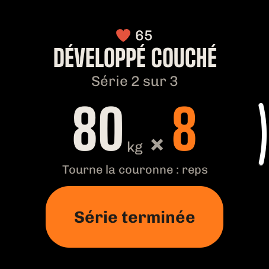
Avec une montre Wear OS (p. ex. Samsung Galaxy Watch 4 et suivantes, Google Pixel Watch, OnePlus Watch, TicWatch), tu pilotes ta séance depuis ton poignet : le téléphone peut rester dans ta poche. Toutes les données restent sur le téléphone ; la montre ne fait que les afficher et envoyer tes saisies.
Installer
- ImberGym doit être installé sur ton téléphone.
- Le plus simple : Profil → « Connecter une montre » → « Installer sur la montre » : le Play Store s’ouvre directement sur ta montre. La page indique aussi si ImberGym y est déjà installé. Tu peux aussi chercher ImberGym dans le Play Store de la montre.
- À la première ouverture sur la montre, autorise les notifications et la fréquence cardiaque.
Lancer une séance
La montre affiche tous les programmes avec leurs séances, la suivante en orange. Touche pour lancer la séance sur le téléphone et la montre. Si une séance est déjà en cours, la montre affiche aussitôt la série actuelle.
Série
- Exercice, « Série 2 sur 3 » et tes valeurs de la dernière fois.
- Touche une valeur → modifie-la avec −/+ (la charge avec ton pas de charge). Touche le chiffre → saisis n’importe quelle valeur, p. ex. 82,5.
- Avec une couronne ou une lunette rotative, tourner change directement les répétitions.
- « Série terminée » valide la série, aussi sur ton téléphone.
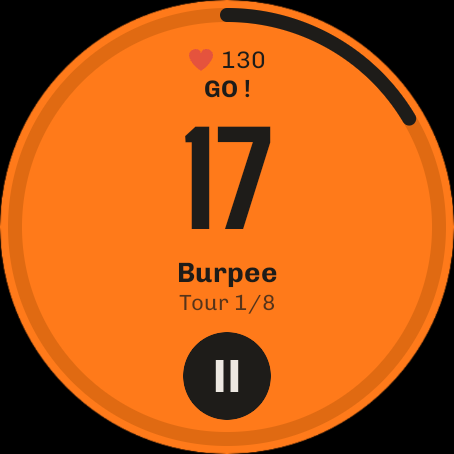
Repos
Compte à rebours avec un anneau ; +15 ajoute du temps, ▶ le passe. La montre compte toute seule et vibre à la fin du repos, même si l’appli n’est pas ouverte ou l’écran éteint. Pendant ce temps, une icône ImberGym avec le temps restant apparaît sur le cadran.
Entraînement fractionné
Sur la page d’un bloc de fractionné, la montre affiche le type, les durées et les exercices avec « Lancer le fractionné ». Ensuite : effort en orange, repos en sombre avec « Ensuite » ; vibration à chaque changement. ⏸ met en pause ; puis ▶ reprend ou ✕ termine. Tu saisis ensuite les répétitions par tour sur le téléphone.
Fréquence cardiaque
Pendant la séance, la montre mesure ta fréquence cardiaque et l’envoie au téléphone, comme une ceinture cardio (affichage ❤, zones cardiaques, détails de la séance). Si une ceinture cardio est connectée, elle est prioritaire.
Tuile
Ajoute la tuile « ImberGym » aux tuiles de ta montre : elle affiche la séance suivante avec « Démarrer » ou, pendant une séance, l’exercice en cours.
Anciennes montres : les montres Tizen (p. ex. Gear S3) ne sont pas compatibles. Garmin, Amazfit et d’autres peuvent souvent diffuser la fréquence cardiaque comme une ceinture cardio (voir Fréquence cardiaque).
11Plein air et Trackshow PREMIUM
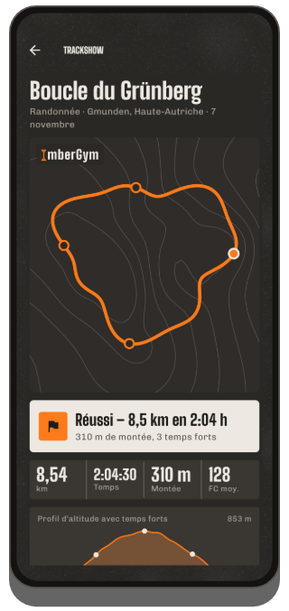
Enregistrer
- Accueil → « Plein air avec GPS » → choisis l’activité (course, vélo, randonnée…).
- Autorise la localisation « pendant l’utilisation de l’appli ». Lance l’enregistrement : l’écran peut être éteint ; une notification indique « ImberGym enregistre ».
- Mets en pause et reprends quand tu veux. En course et à vélo, l’appli se met automatiquement en pause après 10 s à l’arrêt et repart à ton premier pas (pas en randonnée : la pause fait partie de la sortie). Après une pause manuelle, elle reprend aussi toute seule dès que tu repars.
- « Terminer » enregistre la sortie comme séance avec distance, durée, vitesse ou allure et dénivelé (grâce au baromètre).
Trackshow
À la fin, la Trackshow rejoue ta sortie sur des courbes de niveau, avec survol caméra et temps forts (passage le plus raide, point culminant, kilomètre le plus rapide, record), carte de résultat et profil d’altitude. « Rejouer » la relance ; touche le nom du lieu pour le modifier.
Partager en image story (9:16) ou en vidéo avec survol caméra. Les détails de la séance proposent aussi un export GPX pour d’autres applis.
12Historique et statistiques
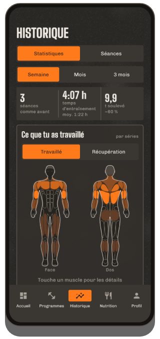
Statistiques
- Période semaine / mois / 3 mois (jusqu’à aujourd’hui) comparée à la période précédente : séances, temps d’entraînement, volume.
- Ce que tu as travaillé PREMIUM : carte du corps de face et de dos ; plus il y a de séries, plus la couleur est intense ; touche pour voir le nombre. Bascule sur Récupération : à quel point chaque muscle est récupéré (estimation).
- Répartition par groupe musculaire en anneau.
- Records : les plus récents ; « Tout voir » ouvre la liste. Touche un record pour voir l’évolution de l’exercice.
- Afficher poids et masse grasse et le bilan de la semaine et de l’année sous forme de carte à partager.
Séances
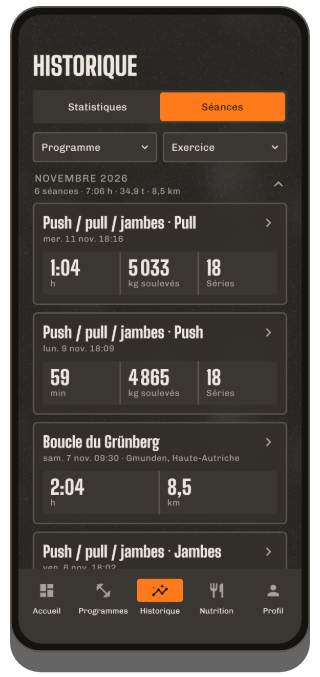
Toutes les séances par année et par mois avec les totaux. Filtre par programme (y compris les « Séances libres ») et par exercice, combinables.
Détails de la séance
- Tous les exercices et séries, trophées pour les records, salle ou lieu.
- Modifier : touche une série pour la changer, ajoute ou supprime des séries, ajuste la date, l’heure de début et la durée, supprime la séance.
- Fréquence cardiaque (moyenne, maximum, courbe) : de la ceinture cardio ou avec « Charger la FC de la montre ».
- Partager la séance sous forme de carte avec muscles, exercices et nouveaux records ; pour les sorties GPS, la Trackshow et le GPX.
Records
Par exercice : charge maximale, 1RM estimé, volume, le plus de répétitions, maintien le plus long ; en cardio, distance la plus longue, allure ou vitesse la plus rapide, durée la plus longue. Un record ne compte que s’il bat une ancienne marque.
13Nutrition
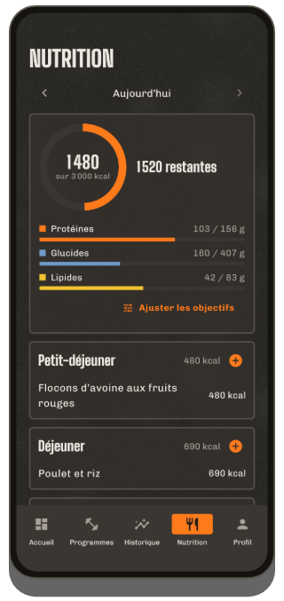
La journée
‹ › change de jour. L’anneau montre ce que tu as mangé par rapport à l’objectif et ce qu’il « reste » ; en dessous, protéines, glucides et lipides. Quatre repas : petit-déjeuner, déjeuner, dîner et en-cas.
Ajouter des aliments
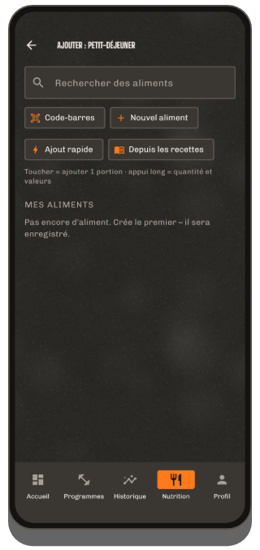
- + sur un repas ouvre les tuiles : d’abord ce que tu manges souvent à ce repas, sinon des suggestions typiques.
- Toucher ajoute aussitôt une portion (la quantité figure sous le nom), avec « Annuler ». Le petit − sur la tuile retire une portion.
- Appui long ouvre la quantité en grammes, millilitres ou portions (aussi ½) avec le tableau nutritionnel.
- Rechercher : plus de 1 200 aliments et plats du quotidien, hors ligne.
- Code-barres : scanne un produit : il est d’abord cherché sur le téléphone, sinon sur Open Food Facts. Vérifie les valeurs et enregistre : la prochaine fois, il sera là immédiatement.
- Crée un aliment perso (valeurs pour 100 g ou 100 ml, interrupteur « Liquide ») ou utilise l’ajout rapide (calories uniquement).
- Depuis les recettes : une recette directement dans ce repas.
- Touche une entrée pour changer la quantité ou la retirer.
Objectifs
« Ajuster les objectifs » (ou touche l’anneau) : choisis ton objectif, un objectif de calories automatique (selon taille, poids, âge et activité) ou perso, des macros individuelles et un objectif pour les jours de repos. Objectif de calories dynamique PREMIUM : ajoute une part de ton activité mesurée via Health Connect (curseur 0–100 %).
Les calories ne t’intéressent pas ? Profil → désactive la nutrition ; l’onglet disparaît.
14Recettes
Nutrition → « Découvrir des recettes » ou la bibliothèque : 40 recettes maison avec filtres (repas, riche en protéines, végétarien). Une recette affiche calories et macros par portion, ingrédients avec calcul des portions (−/+, ½, ¼, ¾), étapes et une astuce. « Ajouter 1 portion au journal » l’enregistre. 6 recettes de base sont gratuites ; toutes les autres et tes propres recettes (ingrédients depuis la recherche d’aliments, photo perso) sont Premium PREMIUM.
15Poids, masse grasse et photos de progression
Poids et masse grasse
- Profil → « Poids et masse grasse » → ajoute une entrée. Masse grasse en valeur ou estimée par mensurations (cou, taille et, si besoin, hanches ; nécessite la taille dans le profil).
- La carte « Actuel » montre la moyenne sur 7 jours et l’évolution. Graphiques PREMIUM sur 1 mois, 3 mois, 1 an ou tout.
- Les entrées sont regroupées par mois ; touche-les pour les modifier ou les supprimer.
- Importer depuis Health Connect (p. ex. une balance Withings) : active l’interrupteur et donne l’autorisation ; les nouvelles mesures arrivent toutes seules ; tire vers le bas pour actualiser tout de suite.
- Le poids de ton profil suit toujours l’entrée la plus récente.
Photos de progression PREMIUM
Profil → « Photos de progression » : choisis la vue (face, profil, dos) ; « Caméra » affiche ta dernière photo en transparence comme modèle (même pose et même distance), avec retardateur. Compare avant/après avec un curseur ou un fondu. Les photos restent dans l’appli, ni dans la galerie ni dans la sauvegarde Android ; « Partager / enregistrer », « Exporter toutes les photos » et « Partager la comparaison » ne les sortent que quand tu le veux.
16Fréquence cardiaque et Health Connect
Fréquence cardiaque de ta montre
Si ta montre écrit dans Health Connect (p. ex. Samsung, Google, Garmin via Health Connect) : dans les détails de la séance, touche « Charger la FC de la montre » ; donne l’autorisation une fois, ensuite ImberGym récupère automatiquement la fréquence cardiaque des séances récentes. Astuce : lance aussi une séance sur la montre ; sinon, elle ne mesure que toutes les quelques minutes.
Montres Huawei : Huawei Health n’écrit pas dans Health Connect. L’appli « Health Sync » transfère la fréquence cardiaque ; ensuite, ça fonctionne comme ci-dessus.
Ceinture cardio et zones
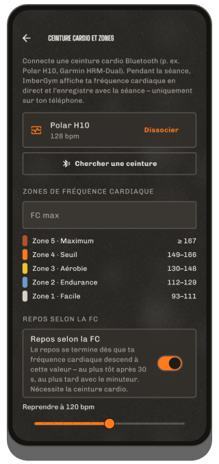
- Profil → « Ceinture cardio et zones » → mets la ceinture, « Chercher une ceinture », associe-la (autorise « Appareils à proximité »).
- Pendant une séance, elle se connecte toute seule ; ta fréquence cardiaque s’affiche en haut dans la couleur de sa zone.
- Règle ta fréquence cardiaque maximale (sinon 220 − âge) ; cinq zones en découlent.
- En option, le repos selon le pouls avec ton propre seuil (voir Repos).
Beaucoup de montres peuvent diffuser la fréquence cardiaque comme une ceinture (p. ex. Garmin « Diffuser la fréquence cardiaque », montres Huawei récentes « Partager la fréquence cardiaque », Polar, Coros, Suunto) : associe-les comme une ceinture.
17Compléments
Profil → « Compléments » : ajoute tes propres produits (nom, forme, unité comme mg, UI, pièce, gouttes…, quantité habituelle et, en option, principe actif par unité). Touche « Pris » chaque jour (appui long = autre quantité, ↶ = annuler, aussi pour les jours passés). Les rappels ont une heure et des jours de la semaine (tous les jours, du lundi au vendredi ou à ton choix). Le calendrier mensuel montre les jours où tu as tout pris. ImberGym ne propose volontairement aucun produit ni dosage.
18Salles et cartes de membre PREMIUM
Mes salles
Profil → « Mes salles » : crée une salle avec un nom et « Utiliser la position actuelle ». Quand tu lances une séance sur place, l’appli reconnaît la salle (« Lieu détecté ») ; sinon, choisis-la pendant la séance via ⋮ → « Choisir le lieu ». Le lieu apparaît dans l’historique, les détails et l’événement de l’agenda.
Cartes de membre
Profil → « Cartes de membre » : scanne le code-barres ou QR de la carte avec la caméra ou saisis le numéro et le format, choisis un nom et une couleur et associe une salle. Touche-la pour l’afficher en plein écran avec la luminosité au maximum, pour le lecteur à l’entrée. Accès rapide par l’icône de carte de l’accueil et pendant la séance via ⋮ → « Afficher la carte ». Les cartes restent uniquement sur ton téléphone (jamais dans une sauvegarde). Malheureusement, un téléphone ne peut pas imiter les puces à transpondeur (RFID/NFC).
19Agenda
Profil → « Enregistrer les séances dans l’agenda » : donne l’autorisation et choisis un agenda ; les séances précédentes peuvent aussi être ajoutées. Chaque séance terminée devient un événement (titre « ImberGym : nom du programme », début et fin, exercices et séries dans la description, salle comme lieu), mis à jour quand tu la modifies et retiré quand tu la supprimes. À la désactivation, l’appli demande s’il faut supprimer les entrées existantes. Aucun événement n’est créé à l’avance.
20Profil et réglages
- Données personnelles : prénom, genre, âge, taille, poids, objectif, activité.
- Langue et unités : les changements s’appliquent immédiatement.
- Silhouette : figure masculine ou féminine dans les animations et la carte du corps.
- Signal de repos : son avec écoute, vibration, « Annonces vocales en fractionné ».
- Minuteur de repos par défaut pour les séances libres et les nouveaux programmes.
- Recommandation du jour et coach anti-stagnation oui/non.
- Nutrition oui/non.
- Poids et masse grasse, photos de progression, compléments, ceinture cardio et zones, mes salles, cartes de membre, agenda, données et sauvegarde.
- ImberGym Premium, Noter ImberGym et À propos d’ImberGym (version, confidentialité, contact, sources, licences).
21Sauvegarde, import et export
Sauvegarde
Profil → « Données et sauvegarde » → créer une sauvegarde : un fichier ZIP avec toutes les données (photos de progression seulement si tu les inclus) ; enregistre-le via le menu de partage, p. ex. sur Google Drive ou dans Fichiers. Conserve-le en lieu sûr ; ImberGym n’a pas de cloud.
Restaurer
« Choisir le fichier de sauvegarde » → vérifie la date et le nombre de séances → « Remplacer ». L’appli redémarre avec les données de la sauvegarde. C’est aussi possible sur la première page après l’installation.
Importer depuis d’autres applis
« Choisir un fichier CSV » : les exports de Strong et Hevy sont reconnus (pour Strong, choisis l’unité de poids). L’aperçu montre les séances, les séries et les nouveaux exercices perso ; les séances en double sont ignorées.
Exporter
« Exporter les séances (CSV) » : une ligne par série ; s’ouvre p. ex. dans Excel.
23Aide
- Le signal de repos ne sonne pas ? Autorise les notifications d’ImberGym et vérifie le mode « Ne pas déranger ».
- Pas de fréquence cardiaque sur les séances courtes ? Sans séance lancée sur la montre, elle ne mesure que toutes les quelques minutes : lance aussi une séance sur la montre ou utilise une ceinture cardio.
- La salle n’est pas reconnue ? Autorise la localisation et enregistre une fois la position de la salle sur place.
Questions, idées, bugs : chr.mathai@gmail.com